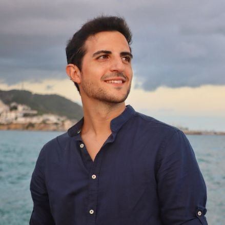

Perfil Personal de J.Jesús Navas (Tito Navas)
¿Quién es J.Jesús Navas?
J.Jesús Navas (Justo Jesus Navas) nació el 13 de Febrero de 1990 en Madrid. Tiene 30 años de edad.
Se formó en Licenciatura en Comunicación Audiovisual UCM desde 2009 hasta 2014.
Además de eso, tiene formación en el Taller del Teatro Real de Madrid en el desarrollo y montaje de la ópera "Wozzeck" en 2013.
Realizó un Ciclo de Animación Asiatica en el Estudio Ghibli en 2013.
Realizó un cuso de teatro y creatividad por la FETAM y la Com. de Madrid en 2012.
Y se formó en la compañía de teatro Narea en eñ desarrollo de la obra Romeo y Julieta en 2007.
Tiene habilidades de realización de video, edición gráfica y vectorial, producción, edición de audio, publicidad y Community Manager, con conocimientos de Adobe Premiere, Adobe Photoshop, Adobe After Effects, Adobe Illustrator, Adobe InDesign, AVID, Final Cut, Audacity, redes sociales y el Office pack de Microsoft Office.
Sus aficiones son la música, viajar, la televisión, el cine, el deporte, leer, navegar en Internet y hacer bicicleta.
Idiomas


Su idioma principal es el Español. Además de eso, tiene un nivel medio de conocimientos de Inglés y un nivel bajo de conocimientos de Francés
Experiencia Profesional
Hízo prácticas en Prisa TV y en Canal + en el Departamento de Realización de programas durante 6 meses entre 2013 y 2014. Ahí, él realizó:
- Montaje de piezas de video y sonorización
- Ayudante de realización en control "OSCARS 2014"
- Ayudante de realización en plató (Regidor) Tentaciones
- Ayudante de realización en control en Taller Canal+
- Edición programa: Canal+ en Hollywood
- Colaboración en: Supercuts, Ilustres ignorantes
Además de eso, ha realizado trabajos y proyectos freelance, como por ejemplo:
- Diseño de blog de contenido cinematográfico, Redactor y Community manager
-
Dirección. Producción. Realización. Guión. Actuación. Cortometrajes, videoclips y otros 2006 - 2020
- Viaje a Marte. / Dir: Tito Navas - 2014
- Loop. / Dir: Tito Navas - 2014
- El Cambio. / Dir: Tito Navas - 2013
- Bárbara. / Dir: Tito Navas y Alejandra Rey - 2013
- H, el sabor de la miel. / Dir: Tito Navas - 2012
- Algo inesperado. / Dir: Tito Navas - 2011
- Hoy no te escaparás. / Dir: Tito Navas - 2010
- Nightmare. / Dir: Tito Navas - 2009
Algunos Cortometrajes
Otros Datos
Algunos logros por los que se le puede reconocer son:
- Sección oficial "LOOP" fest. Horror online Art 2014
- Reconocimiento Noches de Cine desde 2008-2014 Ayto. Malagón
- Mejor corto "Viaje a Marte" fest. Héroe Café Espectáculo 2014
- Mejor fotografía corto "LOOP" fest. Héroe Café Espectáculo 2014
- Mejor videoclip "Los coches chocones" fest. Malagón 2009
Algunos datos de interés:
- Permiso de conducción Bdesde 2008
- Socorrista Acuático FESS desde 2006